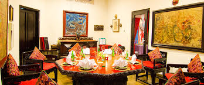
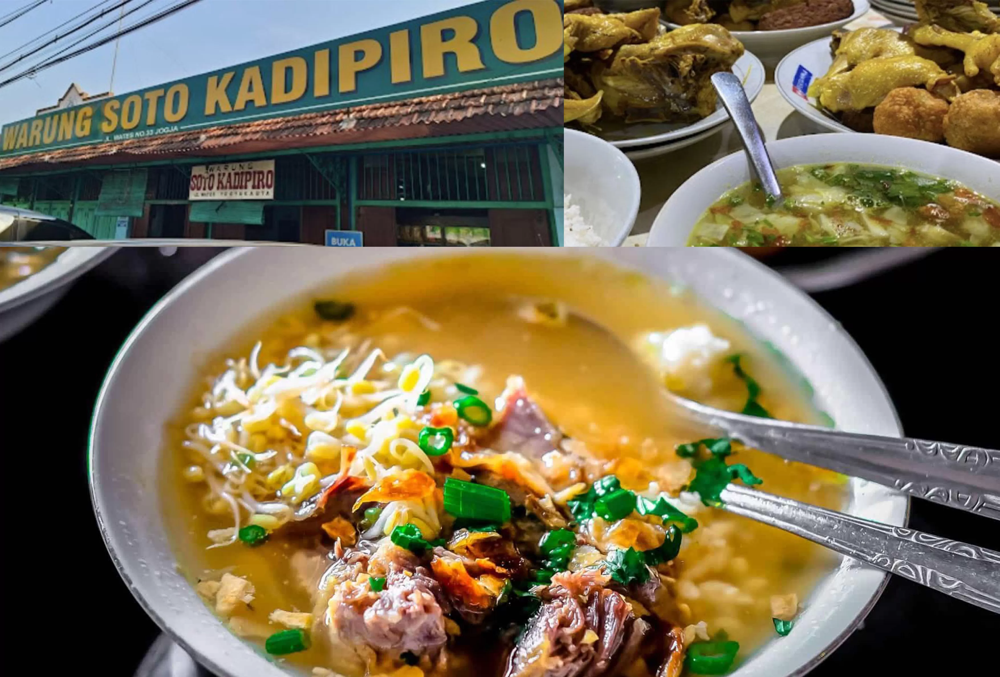

Nikmati cita rasa autentik Nusantara di jantung budaya Indonesia. Dari warung legendaris hingga restoran modern, Pulau Jawa menyajikan pengalaman kuliner yang menggugah selera.

★★★★★ · Yogyakarta
Restoran legendaris yang sudah berdiri sejak 1950-an, menyajikan gudeg khas Yogyakarta dengan cita rasa manis gurih yang otentik. Tempat ini wajib dikunjungi untuk merasakan cita rasa tradisional yang menjadi ikon kota pelajar.
Lihat restoran
★★★★★ · Jakarta
Restoran dengan konsep arsitektur kolonial dan dekorasi etnik Jawa kuno. Menu tradisional disajikan dengan gaya elegan, membawa suasana makan malam yang berkelas namun tetap hangat.
Lihat restoran
★★★★☆ · Yogyakarta
Warung soto legendaris sejak 1921 yang masih mempertahankan resep turun-temurun. Rasanya ringan namun gurih, cocok untuk sarapan atau makan siang khas Jawa yang menenangkan.
Lihat restoranSetiap gigitan adalah perjalanan ke dalam budaya dan sejarah. Temukan restoran terbaik yang membawa cita rasa Nusantara ke meja makanmu.
Jelajahi Kuliner Jawa